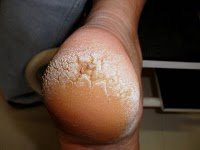

Rachadura no Calcanhar
São lesões lineares, com espessamento e endurecimento, com perda de elasticidade que abre a pele.
As fissuras calcâneas podem variar em espessura; algumas lesam a pele apenas superficialmente e, outras podem até atingir tecidos profundos, com sangramento, devido ao espessamento e endurecimento da camada externa da pele (hiperqueratose), onde o tecido perde a elasticidade e abre, pela pressão ao se movimentar.
Às vezes, atinge os nervos, presentes na derme (segunda camada da pele), causando sangramento e a dor é como se cortasse a pele, com uma navalha.
Prevenção
Geralmente achamos que temos que lixar os pés até ficar bem fininho, ou eliminar toda queratose, mas isso é muito errado! Pois quando lixamos os nossos pés abusivamente sem controlo e conhecimento, mais vamos ter problemas, vai ser aumentado a queratose, fissuras, pois o nosso organismo entende este lixamento maior como uma agressão e com isso ele vai querer se defender gerando mais queratoses. Tudo tem um limite, o podologo sabe exatamente o quanto pode ser removido sem prejudicar a saúde de seus pés.
O podologo faz uso de produtos, aparelho, técnicas e orienta, como se pode eliminar ou amenizar este problema de rachaduras, ajudando a fechar essas fissuras, tudo vai depender do que causa, e principalmente da cooperação do cliente.
